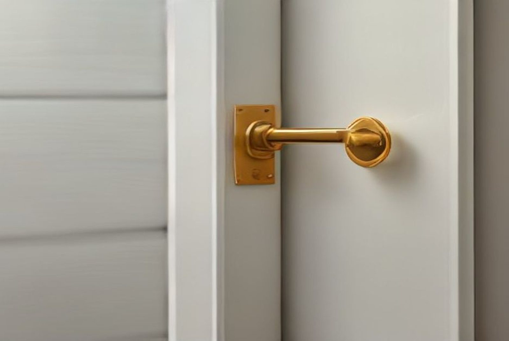

Door installation in Singapore: cost by door type

"How much to install a door" has no single answer, because a toilet bi-fold and a fire-rated main door are barely the same product. As indicative 2026 figures, installation ranges from about S$150 for a bi-fold to S$1,300–2,800 for a main door and gate set. This guide prices every common door type in a Singapore home, explains the frame rule that decides whether you need an HDB permit, and sets out what a proper installation actually includes.
Door installation cost by type (2026)
| Door type | Supplied & installed (SGD) | Notes |
|---|---|---|
| Toilet bi-fold | $150 – $300 | PVC or aluminium, into existing opening |
| Bedroom door, flush / hollow core | $250 – $500 | The HDB standard; lightest and cheapest |
| Bedroom door, semi-solid | $350 – $600 | Better feel and sound; the usual upgrade |
| Bedroom door, solid timber | $550 – $900 | Heaviest; needs sound frame and good hinges |
| HDB metal gate | $500 – $1,200 | Powder-coated mild steel; design drives price |
| Fire-rated main entrance door | $800 – $1,800 | Certified leaf and frame |
| Main door + gate set | $1,300 – $2,800 | Bought together; usually cheaper than separately |
| Door frame replacement | $200 – $450 | Per frame, plus making good the masonry |
| Installation labour only (you supply) | $80 – $180 per door | Fitting, hanging, hardware, adjustment |
| Digital lock installation | $80 – $200 | Labour; boring and alignment on existing door |
One real figure to anchor those ranges: on a recent RK E&C job, three bedroom doors came to about S$380, roughly S$125 a door, in one visit. That line appeared inside a larger S$4,380 repair and redecoration quotation, and it illustrates the biggest lever on this page: bundling. Three doors in one visit cost far less per door than three separate call-outs, because you pay the mobilisation once. The full itemised quotation is in our repair and redecoration works guide.
The frame rule that decides your permit
This is the part most owners discover halfway through, so take it first.
Replacing a door leaf within its existing frame is a simple swap and generally does not need a renovation permit. The moment the work touches the structure (removing or replacing the frame itself, enlarging the opening, or hacking the wall around it), it normally does.
That matters because main door replacements very often include a new frame, which quietly moves the job from "swap a door" into permit territory. Confirm current requirements with HDB before work starts and have your contractor apply where one is needed. Our guide to HDB hacking and demolition rules covers where that boundary sits more generally.
Can you keep the old frame?
Often, and it is the cheapest route, but only if the frame is sound. Test it properly:
- Tap along its length. A hollow, papery sound means termite damage inside. Our termite treatment guide covers what to do first, because a new door in an infested frame is money burnt.
- Press with a thumbnail, especially near the floor. Timber that gives is rotted or water-damaged.
- Check it is square. Measure the diagonals; if they differ by more than a few millimetres, a new leaf will never sit right.
- Check hinge screw holes. Screws spinning in enlarged holes can be plugged and re-drilled once, not repeatedly.
Fitting a new leaf into a compromised frame is the most common false economy in door work. The hinge screws have nothing sound to bite into, and the door drops again within months.
Main door and gate: the one to get right
The entrance set is the most expensive door decision in an HDB flat and the one with the most constraints attached.
- Fire rating. Some flats require a fire-rated main entrance door, and a certified door comes as a matched leaf-and-frame assembly, so you cannot fire-rate a door by fitting a rated leaf into an ordinary frame. Confirm what applies to your block with HDB before ordering.
- Swing direction. The main door normally opens inward, the gate outward. The gate must not obstruct the common corridor when open, a fire-safety and town council matter, and on narrow corridors or corner units it dictates which side the gate is hinged.
- Buy the set together. A main door and gate ordered as a pair is usually cheaper than the two bought separately, and the alignment between them is someone's single responsibility.
- Digital lock first, not last. If a digital lock is going on, tell the supplier before the door is made. Factory-prepared boring is neater and cheaper than cutting a finished leaf on site.
Settle the swing direction and hinge side at the measuring stage. Changing it afterwards means new frame fixings and fresh making-good on both sides of the wall.
Internal doors: choosing the leaf
| Flush / hollow core | Semi-solid | Solid timber | |
|---|---|---|---|
| Typical installed cost | $250 – $500 | $350 – $600 | $550 – $900 |
| Sound blocking | Poor | Noticeably better | Best |
| Feel | Light, drums when knocked | Solid enough | Substantial |
| Water tolerance | Poor, avoid at toilets | Moderate | Good if sealed |
| Frame demands | Low | Moderate | High, needs a strong frame |
For most flats the honest recommendation is semi-solid for bedrooms. The jump from flush is where the perceived quality of a home changes most per dollar, and it is the difference between hearing every word from the next room and not. Reserve solid timber for a study or master bedroom where sound genuinely matters, and check the frame can carry the weight.
At toilets, never use a hollow-core timber door. Moisture at the base swells the core, the laminate skin bubbles, and the door jams in humid weeks. PVC or aluminium bi-folds exist precisely for this. If your existing doors are already showing that damage, our HDB door repair and replacement guide covers the repair-or-replace decision.
For room dividers, wardrobe fronts and kitchen separations, a sliding system is often the better answer in a flat where a swing arc costs you usable floor. See our sliding door installation guide for that comparison.
What a proper installation includes
"Installation" varies more between quotes than the door price does. A complete job covers:
- Site measure of the actual opening, not the nominal door size. HDB openings drift out of square over decades.
- Removal and disposal of the old door, and the frame if it is going.
- Frame fixing, plumbed and squared, grouted or foamed solid where a new frame goes in.
- Hanging the leaf. Hinges morticed, leaf planed to an even gap all round.
- Hardware. Lockset, handle, latch and strike plate fitted and aligned so the door latches without a shove.
- Adjustment after hanging, and again once the door has settled.
- Making good. Patching and touching up the wall and architrave where the old frame came out.
- Clearing debris, including the old door.
Points 7 and 8 are the ones missing from cheap quotes. A frame swap always leaves damaged plaster around the opening; ask whether patching and paint are in or out. Where several openings are involved, our plastering and skim coat guide covers that stage.
Five mistakes that cost money
- Ordering before measuring on site. A door bought to a nominal size that does not match a 35-year-old opening is a door you own and cannot fit.
- Keeping a rotten frame to save $250, then paying twice when the new door drops.
- Doing doors one at a time. Every call-out carries a mobilisation cost. Three doors together, once.
- Deciding the digital lock after the door is made. On-site boring on a finished leaf is slower, messier and sometimes voids the door warranty.
- Fitting doors before flooring. New flooring raises the floor level and a door that cleared the old floor will scrape the new one. Sequence flooring first, then set the undercut. Our flooring guide covers the build-up heights involved.
Frequently asked questions
How much does door installation cost in Singapore?
By type, supplied and installed: S$150–300 for a toilet bi-fold, S$250–500 for a flush bedroom door, S$350–600 semi-solid, S$500–1,200 for an HDB gate, S$800–1,800 for a fire-rated main door, and S$1,300–2,800 for a main door and gate set. Labour only, if you supply the door, is S$80–180 each.
Do I need an HDB permit?
Not for a leaf swap into the existing frame. Normally yes once the frame is removed or replaced, the opening enlarged, or the wall hacked. Confirm with HDB before starting.
How long does it take?
One to two hours per door for a leaf swap into a sound frame. A main door and gate set with new frames is a half to full day. Three or four internal doors are typically one working day.
Which way should the main door and gate open?
Main door inward, gate outward, but the gate must not obstruct the common corridor when open, which on narrow corridors decides the hinge side. Fix this at the measuring stage.
Should I supply my own door?
Usually not worth it unless you want a specific design. Ask for supply and installation split in the quote either way. Contractor-supplied means one party is responsible if the leaf warps.
Can a new door go into an old frame?
Yes, if the frame is square, solid and free of rot or termite damage. Tap it and press it near the floor before deciding. A new leaf in a soft frame drops within months.
Getting it done by RK E&C
RK E&C is a Singapore-registered renovation and handyman company (UEN 202442767D) fitting doors in HDB flats and condos island-wide: main door and gate sets, bedroom and toilet doors, frames, locksets and digital locks, as standalone jobs or inside a larger renovation and repair package.
Because we also do the plastering, patching and painting, the making-good around a new frame is part of the same job rather than a second contractor's visit. And if the old frame turns out to be termite-damaged when we open it up, we treat and replace rather than hand you a phone number.
Send photos of the doors and openings and your postal code via our contact form or WhatsApp and we'll come and measure, then quote a fixed itemised price. Browse our other guides for the rest of the trades.
Doors to fit? We'll measure first.
Main door and gate sets, bedroom and toilet doors, frames and locks, supplied, installed and made good. Free site measure, fixed itemised price, island-wide.
Prices are indicative of the Singapore market in 2026 and not a quotation; the S$380 three-door figure is a line from an actual RK E&C quotation. Door specification, frame condition and opening size drive the cost. Confirm a fixed itemised price after an on-site measure before ordering. Check current permit requirements with HDB where a frame or opening is being altered.